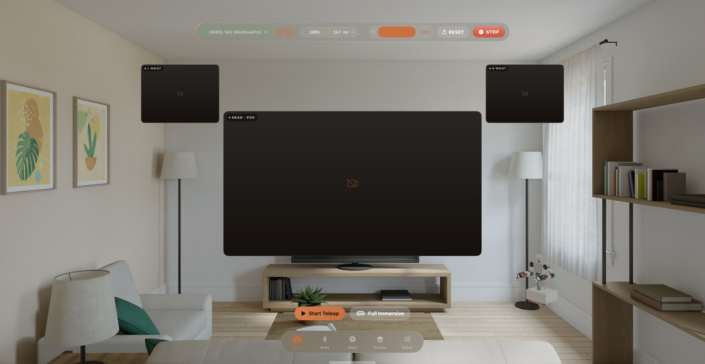
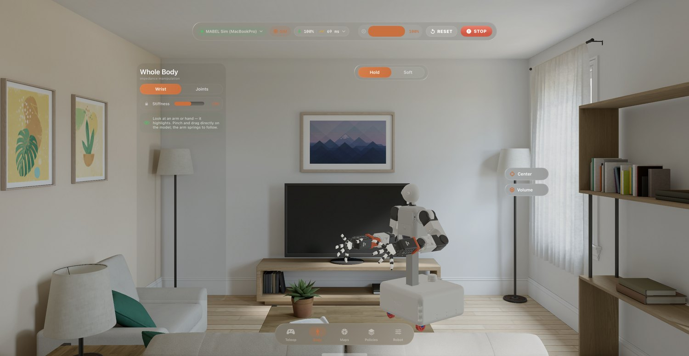
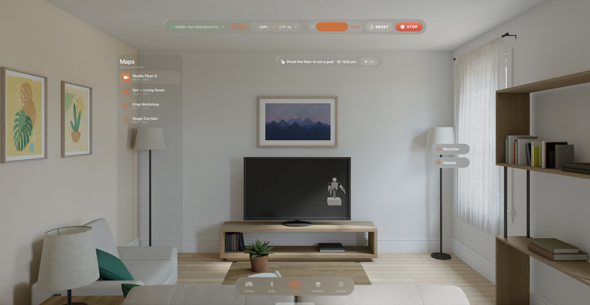

Reach in. It follows.
The same five tabs, floating as glass — every window below is a real capture from the visionOS Simulator. Put the headset on and MABEL's stereo feed wraps around you; step into the immersive room and your hands are the arms — a pinch closes the grasp, your gaze aims the neck. 27 joints per hand at 60 Hz.





Stereo passthrough
The head ZED's left/right streams map onto an inward-facing RealityKit sphere — you look around the robot's world in true stereo, with wrist-cam thumbnails for close work.
Clutch retargeting
A UMI-style relative mapping: pinch to clutch in, move, release to re-anchor — no jumps. Thumb-to-index distance becomes the grasp. See retargeting.
Whole body, one operator
Hand targets feed the control cascade; a lazy swerve base and a look-at neck come along for free. One headset drives all 51 joints.